ST20 ST-20: Starter Deck 20 YELLOW Charlotte Katakuri
English One Piece Card Game deck ST-20 · card list, every variant, and PSA 10 chase cards
Card catalog: the official Bandai card list.ST-20: Starter Deck 20 YELLOW Charlotte Katakuri (ST20, ST-20) is an English One Piece Card Game deck with an English release date of October 25, 2024 and 15 cards in its full card list, counting each parallel, manga and SP version separately. Every card is in the full card list below.
Jump to: Full card list · Set facts · FAQ
Full card list
| No. | Name | Rarity | Version | Product | Color | Type | Cost/Life | Power |
|---|---|---|---|---|---|---|---|---|
| OP03-099 | 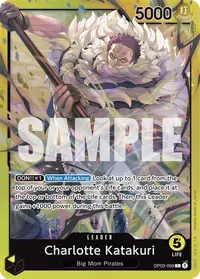 Charlotte Katakuri | L | Normal | ST20 | Yellow | Leader | 5 | 5000 |
| OP03-106 | 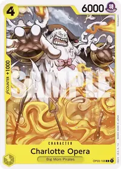 Charlotte Opera | C | Normal | ST20 | Yellow | Character | 4 | 6000 |
| OP03-107 | 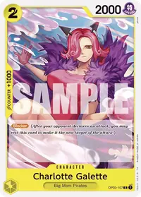 Charlotte Galette | C | Normal | ST20 | Yellow | Character | 2 | 2000 |
| OP03-110 | 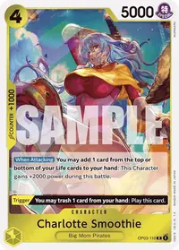 Charlotte Smoothie | R | Normal | ST20 | Yellow | Character | 4 | 5000 |
| OP03-112 | 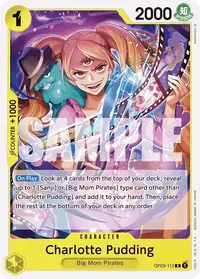 Charlotte Pudding | R | Normal | ST20 | Yellow | Character | 1 | 2000 |
| OP03-115 | 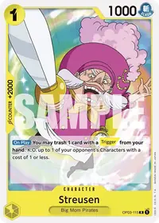 Streusen | R | Reprint | ST20 | Yellow | Character | 1 | 1000 |
| OP03-118 | 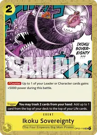 Ikoku Sovereignty | UC | Reprint | ST20 | Yellow | Event | 2 | |
| OP03-121 | 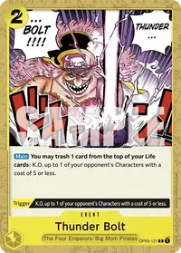 Thunder Bolt | C | Reprint | ST20 | Yellow | Event | 2 | |
| ST07-005 | 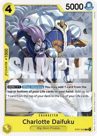 Charlotte Daifuku | C | Normal | ST20 | Yellow | Character | 4 | 5000 |
| ST07-014 | 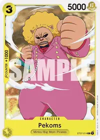 Pekoms | C | Reprint | ST20 | Yellow | Character | 3 | 5000 |
| ST20-001 | 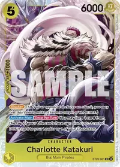 Charlotte Katakuri | SR | Normal | ST20 | Yellow | Character | 5 | 6000 |
| ST20-002 | 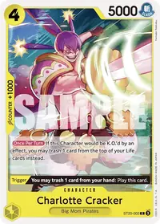 Charlotte Cracker | C | Normal | ST20 | Yellow | Character | 4 | 5000 |
| ST20-003 | 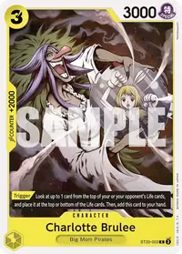 Charlotte Brulee | C | Normal | ST20 | Yellow | Character | 3 | 3000 |
| ST20-004 | 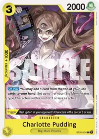 Charlotte Pudding | C | Normal | ST20 | Yellow | Character | 3 | 2000 |
| ST20-005 | 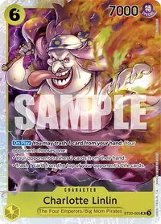 Charlotte Linlin | SR | Normal | ST20 | Yellow | Character | 6 | 7000 |
| ST20-003 | Charlotte Brulee | C | Foil (reprint set) · Pirate Foil | PRB02 | Yellow | Character | 3 | 3000 |
| ST20-003 | Charlotte Brulee | C | Reprint | PRB02 | Yellow | Character | 3 | 3000 |
| ST20-005 | Charlotte Linlin | SR | Promo · 4th Anniversary Treasure Campaign Pack | OP-PR | Yellow | Character | 6 | 7000 |
Card image: © Bandai / ONE PIECE CARD GAME official card list
Set facts
- Official product name
- STARTER DECK -Yellow Charlotte Katakuri- [ST-20]
- Set code
- ST20 · ST-20
- English release
- 2024-10-25
- Japanese release
- 2024-07-13 (OPChase research notes)
- Official Bandai links
- Official card list
FAQ
When was ST20 ST-20: Starter Deck 20 YELLOW Charlotte Katakuri released in English?
ST-20: Starter Deck 20 YELLOW Charlotte Katakuri (ST-20) was released in English on 2024-10-25. The Japanese version came out on 2024-07-13.
How many cards are in ST20?
15 card numbers in our card database. Our database has 15 card printings in the English deck.